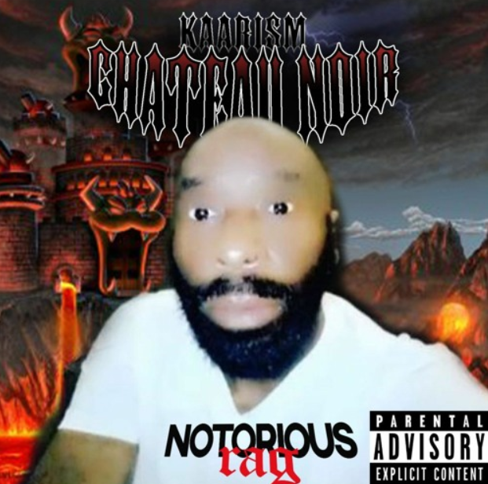
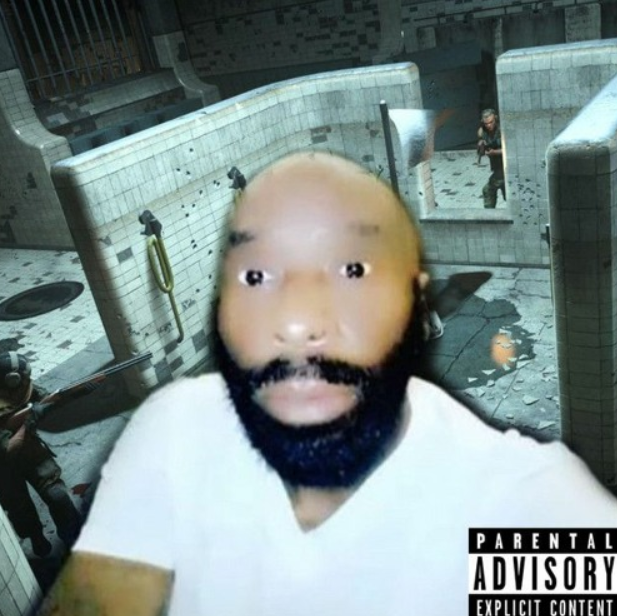
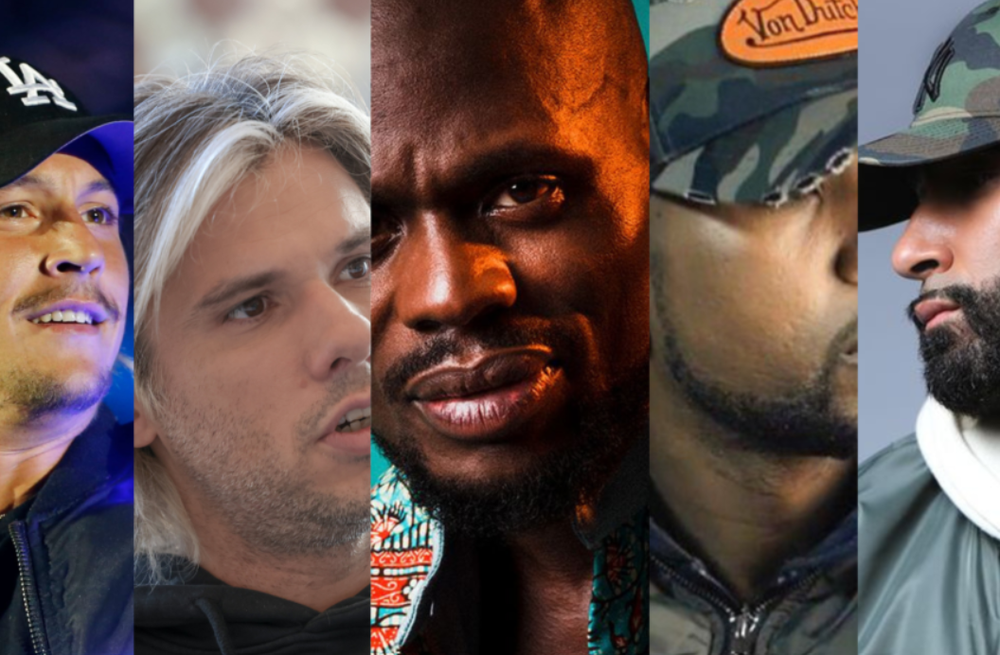

Artiste très très bouillant d’Île de France habitant à Maurepas dans le 94. Très doué et prometteur Kaarism sort du lot par son agressivité et sa tendance à dire tout haut ce que tout le monde pense tout bas. Kaarism est l'étoile montante de la maison de disque Fini la hess Records comprenant de nombreux talents tels que Ghost Whisperer, Micro-Honte, Singeboy.Mp4 ou bien Garagyst.
Sorti en 2020, il produit "Château Noir" seul dans sa chambre, sans s'attendre au succès phénoménal qui le propulse dans l'industrie de la musique.

En 2020, il sort également son plus gros single "Goulag"

Comme son nom l'indique, il s'inspire du rappeur Kaaris auquel il fait souvent référence (titres et singles), dans un style qu'il invente, ou réinvente, le "Goofy"
Kaarism a été honoré par de nombreux rappeurs pour sa contribution à la variété du rap français et du rap en général.
